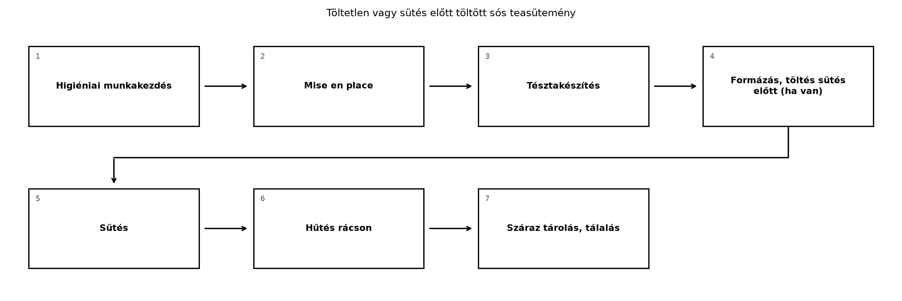
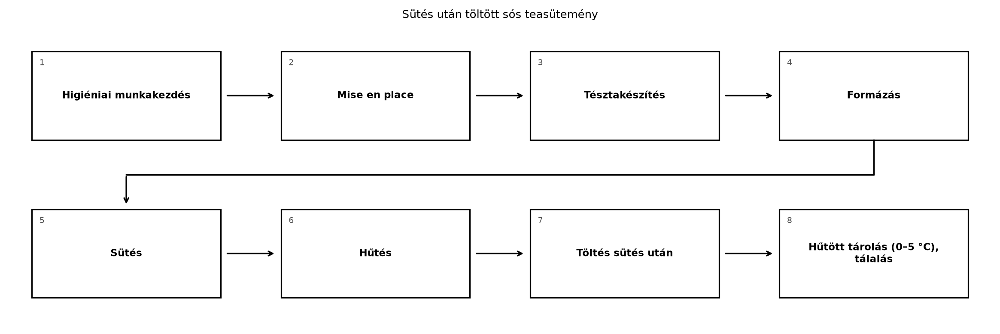

A teasütemény-válogatás akkor lehet igazán kiegyensúlyozott, ha édes és sós darabok egyaránt szerepelnek rajta. A vendég tea, bor vagy sör mellé gyakran kér „valami sósat”, a rendezvényszervező pedig azt várja, hogy a sós aprósütemények ugyanolyan frissen, szépen és biztonságosan készüljenek, mint a cukrászati édes termékek. Ebben az alfejezetben a sós teasütemények leggyakoribb tésztáit, töltési módjait és azok élelmiszerbiztonsági szabályait tanulod meg.
A sós teasütemény készítése sokféle lehet, de a folyamat mindig hasonló vázra épül. Az alábbi két ábra a két fő útvonalat mutatja: a töltetlen vagy sütés előtt töltött termékeket, illetve a sütés után töltött, hűtést igénylő darabokat.


A két útvonal a töltés idejében tér el, és ez kulcsfontosságú: a sütés előtt töltött termékeknél a sütő hője egyben a tölteléket is hőkezeli, a sütés után töltötteknél viszont a hideg krém már nem kap hőkezelést, ezért a hűtési lánc megszakadása azonnal mikrobaszaporodáshoz vezethet.
Definíció. Sós teasüteménynek nevezzük azokat a kisméretű, falatnyi, jellemzően tésztából készült süteményeket, amelyek alapízesítésként konyhasót, valamint gyakran sajtot, fűszereket, olajos magvakat vagy sós tölteléket tartalmaznak, és amelyeket tea, bor, sör vagy büféasztal kísérőjeként kínálnak.
A sós teasüteményeket több szempont szerint csoportosíthatjuk:
| Csoportosítási szempont | Csoportok | Példák |
|---|---|---|
| Tészta szerint | Omlós, vajas/leveles, forrázott | sajtos pogácsa, sajtos rúd, leveles sajtos csiga, sós profiterol |
| Töltés szerint | Töltetlen, sütés előtt töltött, sütés után töltött | köményes rúd, sonkás-sajtos batyu, sajtkrémmel töltött profiterol |
| Formázás szerint | Rúd, karika, pogácsa, kosárka, fánk/halom | csavart rúd, pogácsa, leveles kosárka, gougères |
A sós teasüteményeknél a só egyszerre ízesítő és technológiai tényező: csökkenti az édes íz érzetét, kiemeli a sajt és a fűszerek ízét, ugyanakkor a tészta vízmegkötő képességére és a mikrobák szaporodására is hat. A tészta sótartalma jellemzően a liszt tömegének 1–2 %-a, de a pontos mennyiséget a sajt sótartalma és a vendégkör ízlése szerint kell beállítani (ellenőrizendő: üzemi receptúra).
Higiénia. A sós teasütemények készítésekor ugyanúgy érvényes a higiéniai munkakezdés, mint minden cukrászati terméknél: tiszta munkaruha, hajháló, ékszer levétele, alapos kézmosás, tiszta felületek és eszközök. A sajt, sonka, túró és tojás különösen érzékeny a keresztszennyeződésre, ezért a nyers húst, tojást és a készterméket mindig külön felületen, külön eszközökkel kezeld.
Az omlós tészta a sós teasütemények leggyakoribb alapja, mert jól formázható, sütés után omlós, ropogós állagú, és a sajt, valamint a fűszerek íze kiválóan érvényesül benne. Az omlós tészta alapelve, hogy a hideg zsiradékot a liszttel morzsásra keverjük, majd kevés folyadékkal gyorsan összeállítjuk; a tésztát nem dagasztjuk, mert a sikér fejlődése kemény, rágós terméket okoz.
Sajtos, köményes és szezámos rudak, pogácsák
A sós omlós tészta alapreceptje többféle formában használható fel. A leggyakoribb termékek:
A sós omlós tészta jellemző hibája, ha túldolgozzák, vagy ha a vaj megolvad a gyúrás közben; ilyenkor a termék nem omlós, hanem kemény, zsugorodott lesz. A tésztát ezért mindig hideg alapanyagokkal, gyors mozdulatokkal, szükség szerint rövid hűtőpihenővel készítjük.
Recept: sajtos pogácsa omlós tésztából (alapmennyiség: kb. 40 db, 4–5 cm átmérőjű pogácsa)
| Nyersanyag | Mennyiség (g) | Megjegyzés |
|---|---|---|
| Finomliszt | 500 | lehetőleg alacsony sikértartalmú |
| Vaj | 250 | hideg, kockázva |
| Tojássárgája | 34 | kb. 2 közepes tojás sárgája (ellenőrizendő: tojástömeg) |
| Tejföl | 100 | hideg |
| Só | 8 | a sajt sótartalmától függően csökkenthető |
| Reszelt sajt (pl. trappista) | 150 | a tésztába |
| Őrölt fehérbors | 2 | elhagyható |
| Összesen | 1044 | nyers tészta, veszteség a sütés során |
A kenéshez: 1 db tojás felverve; a szóráshoz: 80–100 g reszelt sajt vagy szezámmag.
A vajas, leveles tészta kiválóan alkalmas sós aprósüteményekhez, mert sütés közben a zsiradékrétegek között keletkező gőz szétválasztja a tésztalapokat, így a termék könnyű, ropogós, réteges lesz. A sós leveles tészták készítésénél a Vajas és leveles tészta feldolgozása és sütése alfejezetben tanult szabályok változatlanul érvényesek: a tészta hőmérséklete 10–14 °C legyen, a nyújtás egyenletes, a vágás éles késsel, merőlegesen történjen, a sütő pedig kellően forró (kb. 200–220 °C, ellenőrizendő).
Töltetlen és sütés előtt töltött leveles sós termékek
Szabály. Ha a sütés előtt töltött leveles termék nyers húst, nyers tojást vagy nyers baromfit tartalmaz, a sütésnek biztosítania kell a biztonságos maghőmérsékletet. Ha ez nem garantálható, az állati eredetű összetevőt elő kell hőkezelni. A gyakorlatban a leveles sós termékek töltelékei általában már hőkezelt sonkából, főtt tojásból, sajtból vagy zöldségből készülnek, így a sütés csak a tészta átsütését és a töltelék átforrósítását szolgálja.
A forrázott tészta (pâte à choux) sós változata a francia konyhában gougères néven ismert. Alapja megegyezik a Forrázott tészta és tésztahüvelyek alfejezetben tanult édes forrázott tésztával, de a masszába reszelt sajtot, borsot, szerecsendiót és néha paprikát keverünk. A sós profiterolokat vagy önmagukban, vagy hideg sós krémmel töltve tálaljuk.
Sós profiterol (gougères) készítése lépésről lépésre
A sós profiterolt legtöbbször sütés után töltjük meg hideg sós krémmel: például krémsajtból, tejszínből, apróra vágott sonkából, snidlingből és fűszerekből készült sajtkrémmel, vagy hideg túrókrémmel. A töltéshez a hüvely alját éles késsel, vagy töltőcsővel kinyitjuk, a krémet nyomózsákból a hüvelybe nyomjuk.
Kritikus pont. A sütés után töltött sós profiterol hideg krémet tartalmaz, amely nem kap hőkezelést. Ezért a töltött terméket azonnal hűtőbe kell helyezni, és 0–5 °C-on kell tárolni a tálalásig. Szobahőmérsékleten legfeljebb rövid ideig, tipikusan 2 órán át tartható, de ez az idő a hőmérséklettől és a töltelék összetételétől függ (ellenőrizendő: hatályos NÉBIH-útmutató). A kiolvadt vagy melegedett töltött terméket visszahűteni nem szabad.
A sós teasütemények élelmiszerbiztonsági szempontból két nagy csoportra oszlanak.
Sütés előtt töltött termékek. Ezeknél a töltelék a nyers tésztával együtt sül, így a sütő hője a tölteléket is hőkezeli. Ha a töltelék nyers tojást, húst, baromfit vagy halat tartalmaz, a sütésnek el kell érnie a biztonságos maghőmérsékletet. A gyakorlatban a cukrászüzemi töltelékek általában előfőzött, párolt vagy sült alapanyagokból készülnek, ezért a kockázat kisebb, de a nyers tojásos töltelékeknél mindig ellenőrizni kell a maghőmérsékletet (pl. 75 °C fölötti maghőmérséklet, ellenőrizendő: hatályos előírás).
Sütés után töltött termékek. A sütés után töltött sós teasütemények (pl. sajtkrémmel töltött profiterol, hideg sonkakrémmel töltött leveles kosárka) a legérzékenyebbek, mert a töltelék már nem kap hőkezelést. A töltelék készítésekor is be kell tartani a hideg konyha szabályait: a krémet hidegen, tiszta eszközökkel, rövid idő alatt készítsd, és a töltött terméket azonnal hűtsd le 0–5 °C-ra. A sós krémek leggyakoribb összetevői – krémsajt, tejszín, tejföl, tojás, sonka – kiváló táptalajt jelentenek a baktériumoknak.
Jogszabály. A sütés után töltött, hűtést igénylő sós teasüteményekre a 852/2004/EK rendelet (élelmiszer-higiénia) hőmérséklet-szabályozási követelményei vonatkoznak. A konkrét hőmérsékleti határokat, a maximális szobahőmérsékleten tölthető időt és a hűtési sebességet a NÉBIH jó higiéniai gyakorlat útmutatója és a vállalati HACCP-terv határozza meg (ellenőrizendő: hatályos útmutató). Az allergének jelölésére az 1169/2011/EU rendelet II. melléklete vonatkozik.
Higiénia. Sós töltelékek készítésekor a nyersanyag-előkészítést (sonka aprítása, tojásfőzés, sajtreszelés) mindig külön felületen végezd, mint a kész krémek és sütemények kezelését. A krémet csak annyi időre hagyd szobahőmérsékleten, amennyi a töltéshez feltétlenül szükséges, és a töltött terméket azonnal helyezd hűtőbe.
A sós teasütemények készítése során a leggyakrabban használt gépek: dagasztógép vagy univerzális konyhagép (omlós tészta készítéséhez), tésztanyújtó (leveles tészta egyenletes nyújtásához), nyomózsák vagy töltőgép (sós profiterol töltéséhez), daráló vagy kutter (sonkakrém, sajtkrém aprításához). A gépek használatánál mindig tartsd be a Gépbiztonság: veszélyforrások, védőberendezések és biztonságos munkavégzés alfejezetben tanult szabályokat.
Biztonsági korlát. A gépi művelet tanműhelyi vagy üzemi környezetben, oktatás után és felügyelet mellett végezhető; otthon háztartási géppel, kis adagban gyakorolj. Működés közben benyúlni tilos, tisztítás előtt áramtalanítás és leállás szükséges, védőburkolat és reteszelés nem iktatható ki.
A sós teasütemények készítésekor gyakran kell a receptúrát átszámítani, mert a rendelések adagszáma változik. A számításokhoz a Receptúra és anyaghányad: nagyítás, kicsinyítés, szorzószám alfejezetben tanult képleteket használjuk.
Példa: sajtos pogácsa receptúrájának átszámítása 40 db-ról 120 db-ra
A fenti alaprecept 40 db pogácsára szól. A kívánt darabszám 120 db, tehát a szorzószám:
A hozzávalókat rendre 3-mal szorozzuk:
Az összes nyers tészta tömege: . A kenéshez és szóráshoz használt mennyiségeket is arányosan növeljük, de ezeknél a veszteség nagyobb, ezért a gyakorlatban inkább enyhén felfelé kerekítünk.
Számítás: sütési veszteség meghatározása
A sütési veszteség azt mutatja meg, hogy a nyers tészta tömegének hány százaléka távozik el a sütés során (főleg vízgőz formájában). A képlet:
Tegyük fel, hogy a 40 db-os adag nyers tésztája 1044 g, és a kész, kihűlt pogácsák össztömege 950 g. Ekkor:
Tehát a sütési veszteség körülbelül 9 %. Ezt az értéket az anyaghányad és a kalkuláció során figyelembe kell venni. ∎
Cél. A tanuló önállóan elkészíti a sajtos pogácsát, megtanulja az omlós tészta sós ízesítését, a formázást, a kenést és a sütést, valamint gyakorolja a technológiai lap kitöltését.
Eszközök és anyagok. Keverőtál, gyúródeszka vagy tiszta felület, nyújtófa, pogácsaszaggató (4–5 cm átmérő), tepsik, sütőpapír, kenőecset, mérleg, hűtő, dagasztógép vagy univerzális konyhagép (ha van). A nyersanyagok a fenti sajtos pogácsa recept szerint.
Higiéniai munkakezdés. Munkaruha felvétele, hajháló, ékszer levétele, kézmosás, a munkafelület és az eszközök fertőtlenítése, a nyersanyagok ellenőrzése (hideg vaj, friss tojás, szavatosság).
Biztonsági korlát. Ha dagasztógépet használsz, a gépet csak oktatás után, felügyelet mellett kezeld. A dagasztókar vagy a horog forgása közben a tálba benyúlni tilos. A sütőajtót óvatosan nyisd, a forró tepsit edényfogóval fogd meg.
Technológiai lap. Sajtos pogácsa omlós tésztából
| Nyersanyag | Mennyiség (g) | Megjegyzés |
|---|---|---|
| Finomliszt | 500 | alacsony sikértartalmú |
| Vaj | 250 | hideg, kockázva |
| Tojássárgája | 34 | kb. 2 közepes tojás sárgája |
| Tejföl | 100 | hideg |
| Só | 8 | a sajt sótartalmától függően |
| Reszelt sajt (trappista) | 150 | a tésztába |
| Őrölt fehérbors | 2 | elhagyható |
| Összesen | 1044 | nyers tészta |
| A kenéshez: | 1 db tojás | felverve |
| A szóráshoz: | 80–100 g reszelt sajt | vagy szezámmag |
Eszközök és gépek. Keverőtál, gyúródeszka, nyújtófa, pogácsaszaggató, tepsik, sütőpapír, kenőecset, mérleg, hűtő, univerzális konyhagép (opcionális).
Műveleti sorrend számozott lépésekben:
Kritikus pontok és technológiai kulcspontok. A tészta hőmérséklete a készítés során végig hideg maradjon (10–14 °C). A sütő hőfoka és ideje biztosítsa a teljes átsülést, de a sajt ne égjen meg. A tojásos kenés és a sajtos szórás után a pogácsákat azonnal sütni kell, mert a tojás beszáradhat, a sajt megolvadhat és a tetejére ragadhat.
Allergének. Glutén (búzaliszt), tojás, tej (vaj, tejföl, sajt). A szezámos változatnál szezámmag. A felhasznált sajt összetétele és a gyártó jelölése szerint egyéb allergének (pl. tej) is jelen lehetnek. Keresztszennyeződésre figyelni kell, ha gluténmentes vagy tejmentes terméket is készítenek ugyanabban a műhelyben.
Minőségi jellemzők. Forma: egyenletes, kerek, szabályos pogácsa, a teteje enyhén domború. Felület: aranybarna, a sajt szép, egyenletes pirulású. Metszet: omlós, morzsalékos szerkezet, nem tömör, nem nyers. Íz: kellemesen sós, sajtos, vajas. Illat: friss süteményillat, enyhén vajas, sajtos. Állag: kívül ropogós, belül omlós, nem kemény, nem száraz.
Tárolás, eltarthatóság, tálalás. A hústartalmú (pl. sonkás), sütés előtt töltött leveles terméket kihűlés után hűtve tároljuk, vagy a sütéstől számított rövid időn belül kiszolgáljuk (ellenőrizendő: üzemi HACCP-terv). A sajtos pogácsa töltetlen, sütött termék, szobahőmérsékleten, száraz, hűvös helyen, jól záródó dobozban 2–3 napig eltartható (ellenőrizendő: üzemi gyakorlat). Ha a pogácsát sütés után töltötték (pl. sajtkrémmel), akkor 0–5 °C-on, legfeljebb 1–2 napig tartható, és a hűtési láncot meg kell tartani. Tálaláskor a sós teasüteményeket kosárban, tálon vagy büféasztalon, lehetőleg frissen, azonnal fogyasztásra kínáljuk.
A sós teasütemények minőségét a sütés után azonnal, majd a tárolás során is ellenőrizni kell. Az érzékszervi vizsgálat szempontjai:
A hűtött, sütés után töltött termékeknél minden nap ellenőrizni kell a hűtő hőmérsékletét és a termék állapotát; a hűtési lánc megszakadása esetén a terméket selejtezni kell.
Hiba: a sajtos pogácsa kemény, nem omlós. Ok: a tésztát túldolgozták, a sikér kifejlődött, vagy a vaj megolvadt, és a tészta meleg lett. Megelőzés: hideg alapanyagok, gyors összeállítás, hűtőpihenő. Javítás: a már megsütött kemény pogácsán nem lehet javítani; a következő adagnál tartsuk be a hideg technológiát.
Hiba: a leveles sós rúd nem leveles, hanem tömör. Ok: a tészta túl meleg volt, a vaj beledolgozódott a tésztába, vagy a vágás nem volt éles, és a rétegek összezáródtak. Megelőzés: a hajtogatott tészta hideg tartása, éles kés, merőleges vágás, a lekenés csak a tetején. Javítás: a tömör termék selejt; a technológiát kell javítani.
Hiba: a sós profiterol töltés után meleg, és a krém folyik ki belőle. Ok: a hüvely nem hűlt ki teljesen, vagy a krém túl lágy, és a töltött terméket nem hűtötték azonnal. Megelőzés: a hüvely teljes kihűtése, a krém megfelelő hőmérséklete (hideg, de kenhető), a töltött termék azonnali hűtése 0–5 °C-ra. Javítás: ha a hűtési lánc megszakadt, a terméket selejtezni kell; enyhe lágyulásnál gyors hűtés és azonnali tálalás lehet megoldás, de csak akkor, ha a hőmérsékleti szabályokat nem sértettük.
Hiba: a sajtos pogácsa teteje megégett, a belseje nyers. Ok: túl magas sütőhőfok vagy a tepsi túl közel volt a felső fűtőszálhoz. Megelőzés: a sütő hőfokának beállítása 180–200 °C-ra, a tepsi középső sínen, szükség szerint hőlégkeverés. Javítás: az égett darabokat selejtezni, a következő adagnál hőfokot csökkenteni.
Egy cukrászüzlet esküvői büféasztalra 300 darab sós teasütemény-válogatást vállalt: 120 sajtos pogácsa, 80 szezámos rúd, 60 leveles sonkás csiga és 40 sajtkrémmel töltött sós profiterol. A termelés napján a konyha hűtője a déli órákban meghibásodott, és a hőmérséklet 12 °C-ra emelkedett. A munkatárs a sütés után töltött profiterolokat csak a hűtőhiba észlelése után vette észre, addig azok körülbelül 3 órát álltak meleg konyhában. Mivel a töltelék krémsajtot, tejszínt és apróra vágott sonkát tartalmazott, a termék hűtési lánca megszakadt, és a töltött profiterolokat selejtezni kellett. A töltetlen sajtos pogácsát és a szezámos rudat átmenetileg száraz, hűvös helyen tárolták; a sütés előtt töltött, sonkás leveles csigát kihűlés után hűtve tárolták, vagy a sütéstől számított rövid időn belül kiszolgálták (ellenőrizendő: üzemi HACCP-terv). Az eset tanulsága: a sütés után töltött sós termékek hűtése kritikus pont; a hűtő meghibásodásakor azonnal ellenőrizni kell a hűtött termékeket. Egységes szabály: ha a sütés után töltött terméket 2 óránál tovább tartották 5 °C fölött, selejtezzük; 2 órán belül azonnal kiszolgáljuk, visszahűteni nem szabad (ellenőrizendő: NÉBIH-útmutató, üzemi HACCP-terv).
1. feladat (A) Fogalmazd meg röviden, mi a különbség a sós omlós tészta és a sós leveles tészta között a lazítás módja és a felhasználás szempontjából!
2. feladat (A) A sajtos pogácsa alapreceptje 40 db-ra szól. Számítsd ki a hozzávalókat 100 db-ra! (A szorzószámot két tizedesjegyre kerekítsd, majd a mennyiségeket egész grammra.)
3. feladat (B) Egy sós profiterol hüvely nyers tömege 18 g, a kész, sütött és kihűlt hüvely tömege 14,5 g. Számítsd ki a sütési veszteséget! Ha 60 db hüvelyt sütünk, mennyi lesz a kész hüvely össztömege?
4. feladat (B) Állítsd sorba a leveles sajtos-sonkás csiga készítésének lépéseit: (a) sütés 200–220 °C-on, (b) a tészta kinyújtása és hideg tartása, (c) a csigák felvágása és vágott felükkel lefelé tepsire helyezése, (d) a töltelék felhordása, (e) a tészta feltekerése, (f) tojásos lekenés és sajtos szórás. Indokold meg a sorrendet!
5. feladat (C) A műhelyben a sajtkrémmel töltött profiterolokat a tálalás előtt 2,5 órával kivették a hűtőből, és a pulton hagyták. A konyha hőmérséklete 26 °C. Milyen kockázatot jelentesz, és mi a helyes döntés? Milyen dokumentumot kell kitölteni?
6. feladat (D) Készítsd el a sajtos pogácsát a gyakorlati útmutató szerint. Töltsd ki a technológiai lapot, mérd meg a nyers és a sült tömegeket, számítsd ki a sütési veszteséget, és értékeld a termék minőségét a megadott szempontok szerint.
Önellenőrzés – válaszok
1. feladat (A) megoldás
A sós omlós tészta zsiradékkal lazított: a vaj részben bevonja a lisztet, ezért a sikér nem tud erős hálót kialakítani, így a tészta omlós, morzsalékos lesz. A sós leveles tészta mechanikai lazítású: a hajtogatással vajrétegek és tésztarétegek váltakoznak, és a sütésnél a vajban lévő víz gőze szétválasztja a rétegeket. Az omlós tésztát pogácsához, rudakhoz; a leveles tésztát csigákhoz, batyukhoz, leveles rudakhoz használják.
2. feladat (A) megoldás
Az alaprecept 40 db-ra szól, a kívánt darabszám 100 db. Szorzószám:
A hozzávalók 2,5-del szorozva:
Összesen: g. Ellenőrzés: 100 db pogácsa 2,5-szer nagyobb adag, a mennyiségek arányosak. ∎
3. feladat (B) megoldás
Sütési veszteség:
60 db hüvely esetén a kész tömeg: g. Ellenőrzés: a veszteség kb. 19,4 %, ami forrázott tészta esetén reális. ∎
4. feladat (B) megoldás
Helyes sorrend: (b) a tészta kinyújtása és hideg tartása, (d) a töltelék felhordása, (e) a tészta feltekerése, (c) a csigák felvágása és vágott felükkel lefelé tepsire helyezése, (f) tojásos lekenés és sajtos szórás, (a) sütés 200–220 °C-on. Indoklás: a leveles tésztát hidegen, vékonyra kell nyújtani; a tölteléket a nyújtott lapra kenjük, majd feltekerjük; a felvágott csigákat vágott felükkel lefelé helyezzük, hogy sütés közben megtartsák formájukat; a lekenés és szórás a sütés előtti utolsó lépés, hogy a szórás ne ázzon el; a sütés az utolsó művelet.
5. feladat (C) megoldás
A sajtkrémmel töltött profiterol sütés után töltött termék, hideg krémet tartalmaz. A 26 °C-os konyhában 2,5 óra alatt a töltelékben a baktériumok elszaporodhatnak, ezért a termék a 2 órás határ túllépése miatt nem biztonságos (ellenőrizendő). Helyes döntés: a terméket selejtezni kell, a hűtési lánc megszakadását a HACCP-dokumentációban (pl. eltérésjelentés, selejtezési jegyzőkönyv) rögzíteni kell, és a hűtési gyakorlatot javítani (pl. a terméket csak közvetlenül tálalás előtt kivenni).
6. feladat (D) megoldás
A gyakorlati feladat értékelési szempontjai: a tészta hidegen tartása, a formázás egyenletessége, a sütési hőfok és idő betartása, a sütési veszteség kiszámítása, a minőségi jellemzők ellenőrzése. Várt eredmény: a pogácsák aranybarnák, omlósak, sajtosak, a tömegük megfelel az előírásnak. A technológiai lap kitöltésekor minden rovatban pontos adatok szerepeljenek.
A sós teasütemények a cukrászati kínálat fontos, nem édes tagjai. Készülhetnek omlós, vajas/leveles vagy forrázott tésztából, és lehetnek töltetlenek, sütés előtt vagy sütés után töltöttek. Az omlós tésztánál a hideg vajjal való gyors összeállítás és a sikér fejlődésének elkerülése a kulcs; a leveles tésztánál a hideg tartás, az éles vágás és a 200–220 °C-os sütés (ellenőrizendő). A forrázott tésztás sós profiterol (gougères) sütés után hideg sajtkrémmel vagy túrókrémmel tölthető, de mivel a töltelék nem kap hőkezelést, a hűtési lánc (0–5 °C) kritikus pont. A sütés után töltött sós termékeket azonnal hűteni kell, szobahőmérsékleten 2 óránál tovább nem tarthatók (ellenőrizendő). A gépek (dagasztógép, nyújtó, töltőgép) használatánál a védőburkolat és a biztonsági szabályok betartása kötelező. Továbbvitt eredmény. Az itt tanult sós teasütemény-technológiákat a vizsgafelkészülésben és a gyakorlati munkában alkalmazzuk: a sajtos pogácsa a gyakorlati vizsgafeladat része lehet, a sütés után töltött sós profiterol pedig a hidegcukrászati és büfétermékek alapja.